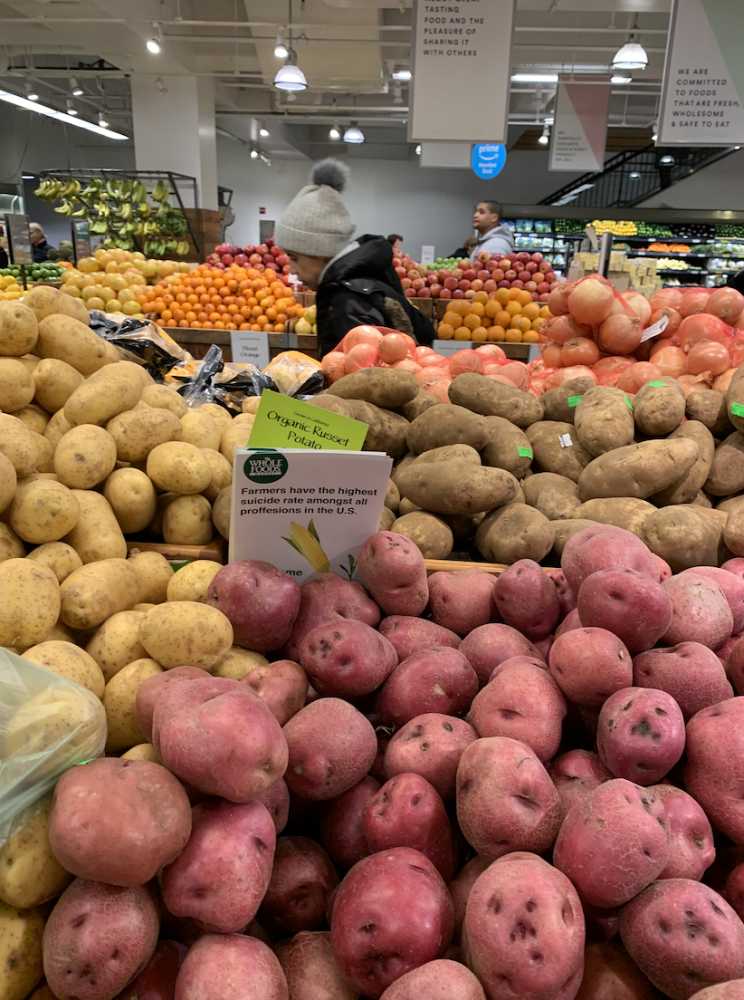

Know Your Farmer
While it may seem that farming has become and industrial practice that is far from the truth. Large farms only account for 4% of all farms. But only 66% of all sales. That leaves 96% of family farms having to split only 34% of sales.
Trade wars and climate change are constantly creating stressful situations for farmers. This often leads to farmers having to declare bankruptcy and losing not only their farm put a piece of who they are. As a result suicides amongst farmers has been constantly rising yet no ones seems to be helping. This has left farmers to take matters into their own hands. Some have created informal support groups to have a safe space to vent. While some like Mike Rosmann have dedicated their lives to provide counseling for farmers and create the first textbook on agricultural behavioral health.
How Can You Help?
After speaking with mike Rosmann he said that he currently needs the help of an editor to finish the textbook that he is currently working on. The textbook deals with agriculture behavioral health it will be used to train licensed behavioral health professionals and students seeking to help farmers. So if you are an editor and are willing to help Mike please contact him at: mike@agriwellness.org
AgriWellness, Inc. also takes donations via PayPal!
